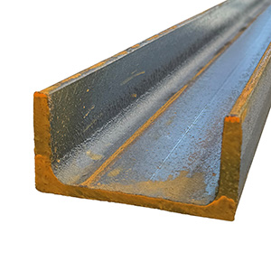
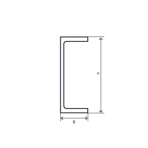

The natural choice


UPE-Bjælker S355J2
Vælg varianter for at se prislisten
Bearbejdningsmuligheder
+
Leveringsmuligheder
+
Tilføj certifikat
Din pris
Outlet pris
Tak for din besked. Vi vil kontakte dig hurtigst muligt.
Produktinformation
UPE-bjælken er en klassisk varmvalset stålprofil med tværsnit som et liggende U. UPE-bjælken er en nyere standard af U-bjælker, som har to lige parallelle flanger, hvilket forenkler sammenføjningen. Leveres i ståltypen S355J2. UPE-bjælker anvendes som kantbjælker, som gulvstøtter i byggeri, som afstivere i pladekonstruktioner og som støtteelement i industrielle hyldesystemer. De fleste produkter i denne produktkategori indgår i Tibnor Low CO2 Assortment. Læs mere om Tibnor Low CO2 Assortment.
Hvis du har brug for hjælp og råd vedrørende materialevalg, er du velkommen til at kontakte os.